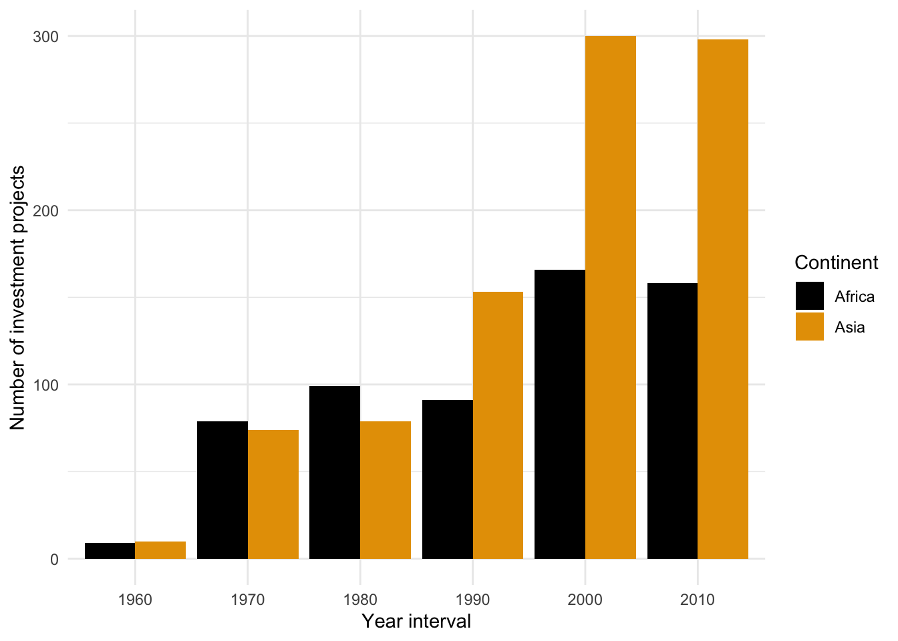
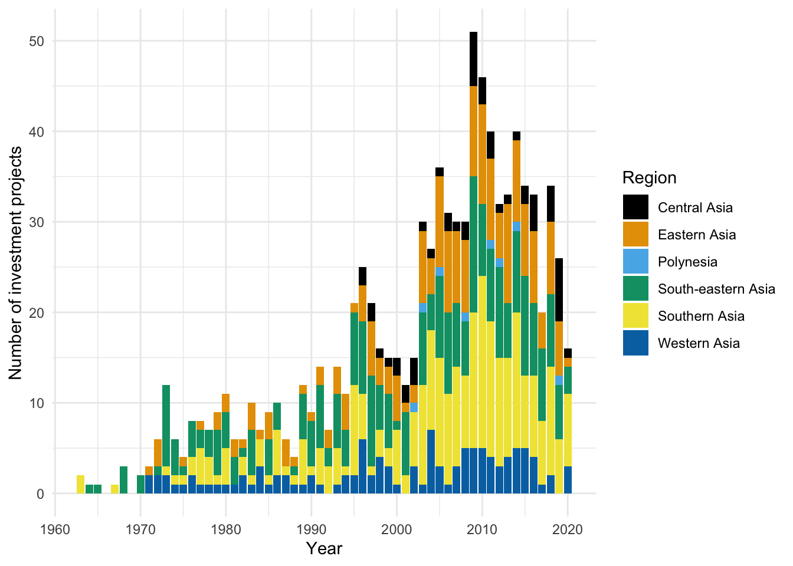
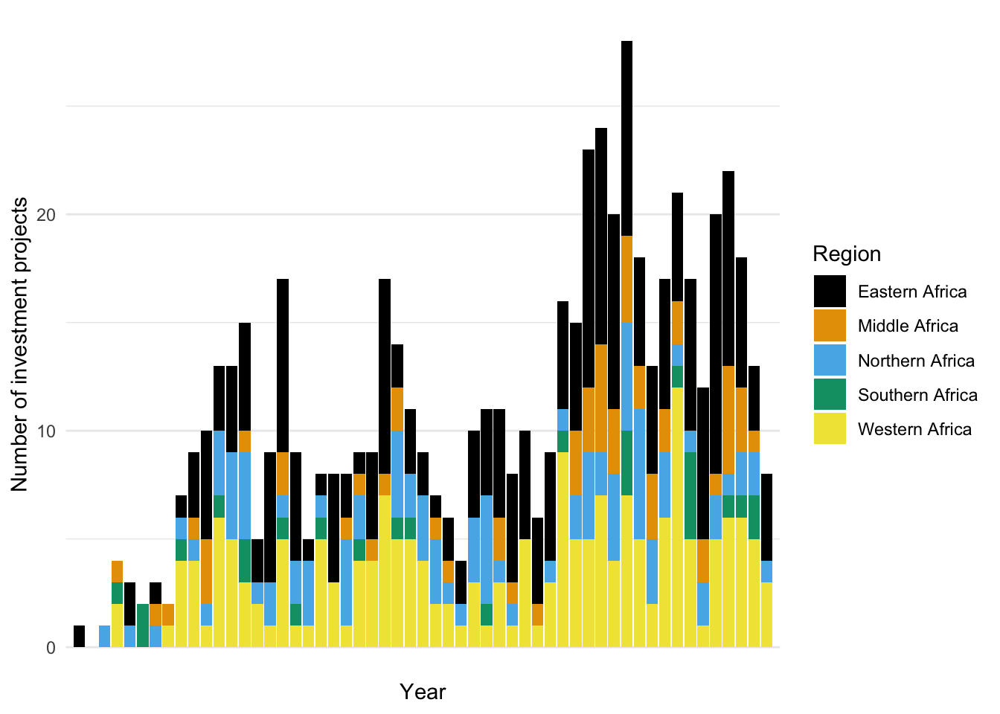

Code
# import the required libraries
library(washinvestments)
library(ggplot2)
library(ggthemes)
library(countrycode)
library(dplyr)![]()
The data in this manuscript was prepared by Götschmann et al. (2024) and is available as an R data package titled washinvestments: https://openwashdata.github.io/washinvestments/.
# import the required libraries
library(washinvestments)
library(ggplot2)
library(ggthemes)
library(countrycode)
library(dplyr)# Data transformation
# Add a new column for continent information as well as a new column for 10-year intervals
washinvestments <- washinvestments |>
mutate(continent = countrycode(iso_country_code, "iso3c", "continent"),
year_interval = cut(year,
breaks = seq(1960, 2020, by = 10),
labels = seq(1960, 2010, by = 10)))
# Filter the data for Africa and Asia
washinvestments_asia_africa <- washinvestments |>
filter(continent %in% c("Africa", "Asia"))
# Count the number of projects per continent and arrange it in descending order
continent_counts <- washinvestments_asia_africa |>
group_by(continent, year_interval) |>
summarise(count = n()) |>
arrange(desc(year_interval))
# Filter the data set for Asia
washinvestments_asia <- washinvestments |>
filter(region %in% c("Central Asia", "Eastern Asia", "Polynesia", "South-eastern Asia", "Southern Asia", "Western Asia"))
# Count the number of projects per region and arrange it in descending order
asia_counts <- washinvestments_asia |>
group_by(region) |>
summarise(count = n()) |>
arrange(desc(count))
# Filter the data set for Africa
washinvestments_africa <- washinvestments |>
filter(region %in% c("Northern Africa", "Eastern Africa", "Middle Africa", "Western Africa", "Southern Africa"))
# Count the number of projects per region and arrange it in descending order
africa_counts <- washinvestments_africa |>
group_by(region) |>
summarise(count = n()) |>
arrange(desc(count))Figure 1 presents a bar plot illustrating the number of WASH (Water, Sanitation, and Hygiene) investment projects in Africa and Asia, aggregated over 10-year intervals from 1960 to 2010.
# Create bar plots of investment trends
ggplot(continent_counts, aes(x = year_interval, y = count, fill = continent)) +
geom_bar(stat = "identity", position = "dodge") + # Position dodge for side-by-side bars
labs(x = "Year interval",
y = "Number of investment projects",
fill = "Continent") +
scale_fill_colorblind() +
theme(plot.title = element_text(hjust = 0.5, face = "bold", color = "#333333")) +
theme_minimal()
Figure 2 summarizes the number of WASH investment projects across different regions within Asia. Each bar represents a specific Asian region (such as Central Asia, Eastern Asia, Polynesia, South-eastern Asia, etc.), and the height of the bar indicates the total number of projects recorded in each region.
ggplot(washinvestments_asia, aes(x = year, fill = region)) +
geom_bar() +
scale_x_continuous(breaks = seq(1960, 2020, 10)) +
labs(x = "Year",
y = "Number of investment projects",
fill = "Region") +
scale_fill_colorblind() +
theme(plot.title = element_text(hjust = 0.5, face = "bold", color = "#333333")) +
theme_minimal()
Figure 3 presents a bar plot showing the number of WASH investment projects across various African regions. Each bar corresponds to a specific region (such as Northern Africa, Eastern Africa, Middle Africa, Western Africa, etc.)
ggplot(washinvestments_africa, aes(x = year, fill = region)) +
geom_bar() +
scale_x_discrete(breaks = seq(1960, 2020, 10)) +
labs(x = "Year",
y = "Number of investment projects",
fill = "Region") +
scale_fill_colorblind() +
theme(plot.title = element_text(hjust = 0.5, face = "bold", color = "#333333")) +
theme_minimal()